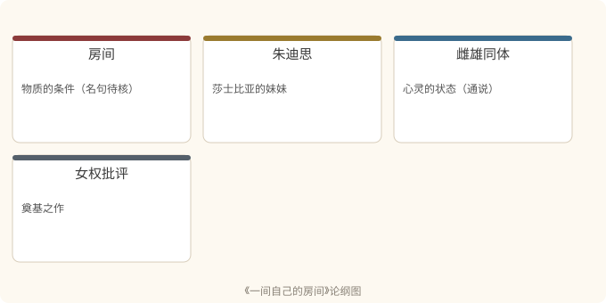

一间自己的房间
一、基本信息
| 作者 | 伍尔夫 |
|---|---|
| 成书/出版 | 1929年（作者页 B128 口径：一间自己的房间（1929）） Virginia Woolf — Encyclopaedia Britannica（百科全书） |
| 国别/地区 | 英国 |
| 时代 | 现当代 · 20世纪 |
| 体裁 | 论文 |
| 语言 | 英语 |

《一间自己的房间》论纲图（主题·结构图）
二、创作背景
作者页（B128）：伍尔夫 major_works 载'一间自己的房间（1929）'（B128 作者页定位，详见 daluolaiwei 条核对）。
出处（通说待核）：1928年剑桥两篇讲稿扩展——'女人要写小说，必须有钱和一间自己的房间'（名句通说待核）。
虚构（通说待核）：'莎士比亚的妹妹'朱迪思的思想实验。
三、内容脉络
'莎士比亚的妹妹'思想实验→牛桥的排除→'雌雄同体'的心灵（结构通说待核）。
四、主要人物表
| 人物 | 身份 | 说明 |
|---|---|---|
| 朱迪思·莎士比亚 | 虚构的妹妹 | 思想实验（通说待核） |
五、主题与艺术特点
- 女性与写作的物质条件（名句通说待核）。
- '雌雄同体'的心灵（通说待核）。
- 女权批评的奠基（通说）。
六、影响与评论
- 作者页：伍尔夫论著代表作（B128 作者页口径）。
Virginia Woolf — Encyclopaedia Britannica（百科全书） - 女性主义批评的奠基文本之一（通说待核）。
Virginia Woolf — Encyclopaedia Britannica（百科全书）
七、阅读建议
难点
- 讲座体的口语转论文。
- '雌雄同体'概念。
- 《一间自己的房间》（人民文学出版社/上海译文版本，通说待核）。
- 英文原版（公有领域渐近）。
先《达洛维夫人》后本作。
八、待核实
- 1928年剑桥纽纳姆/格顿学院讲稿说核对。
- 名句原文核对。
- '雌雄同体'（androgyny）概念核对。